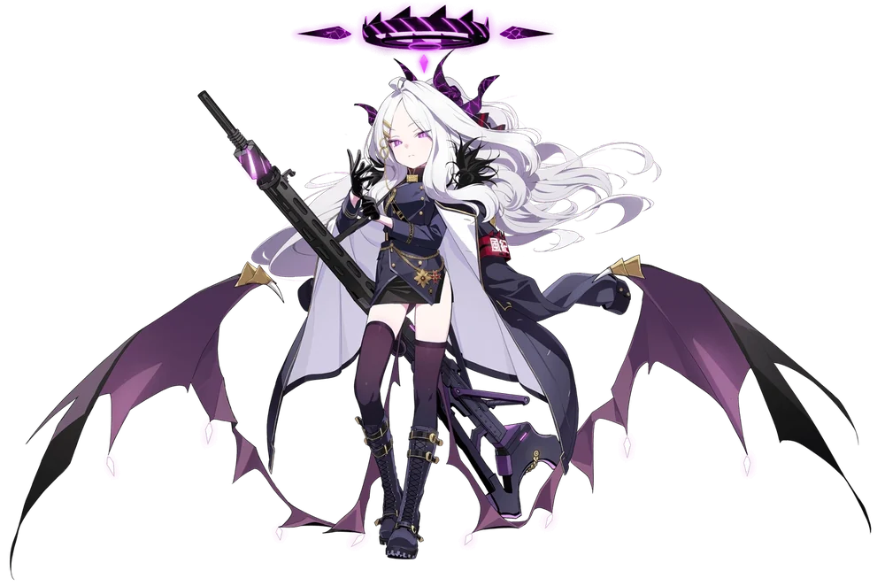
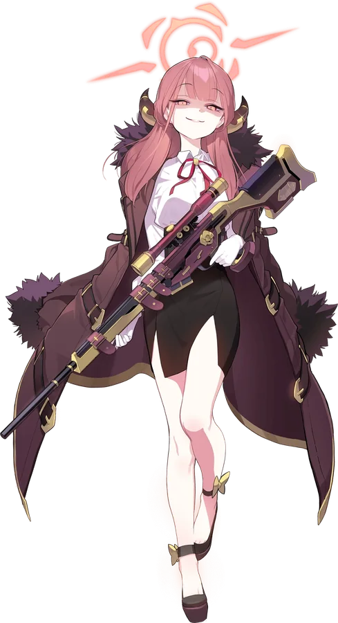

KSU 工具箱 / SCHALE 终端
Zygisk Next · HMA-OSS
「老师，交给我们吧。」— SCHALE 全员
点击图标直接启动已安装的游戏
点击图标直接启动游戏
「老师，想先清理哪个游戏？」
ENV TOOLKIT · 设备属性与游戏环境
卸载重装并迁移数据，修复主空间应用环境
只处理指定分身用户，主应用不受影响
读取 xbl_config 分区，检测防回滚版本
按关键词在指定目录里搜索文件与路径


设备会立即重启，未保存的数据可能丢失。